Quét QR — chạy thử trên vấn đề của bạn.
Cây búa Claude trong tối ưu năng suất dành cho CxO.
"Tối ưu năng suất" thật ra không nằm ở chuyện làm việc cũ nhanh hơn. Mà là biết việc nào thật sự đáng để làm, dựng sẵn hệ thống cho nó một lần, rồi bỏ bớt những thứ không cần thiết. 20 phút này nói về điều đó — không phải vài mẹo vặt để làm nhanh hơn.
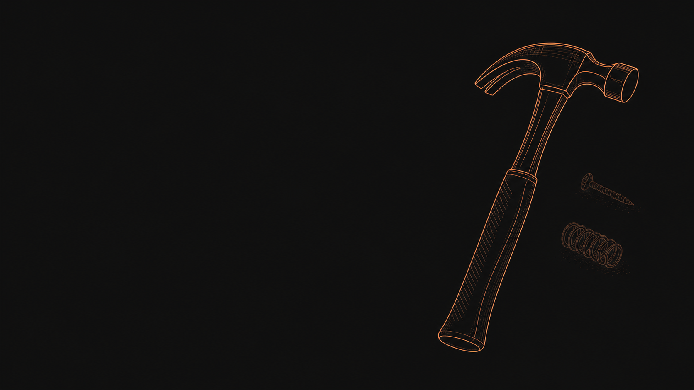
Bạn đang đi tìm vấn đề
cho giải pháp.
Thấy AI làm được gì đó hay → rồi đi tìm một vấn đề trong công ty để nhét nó vào. Đó là cầm búa đi tìm đinh. Hôm nay mình đảo chiều: bắt đầu từ vấn đề, không từ giải pháp.
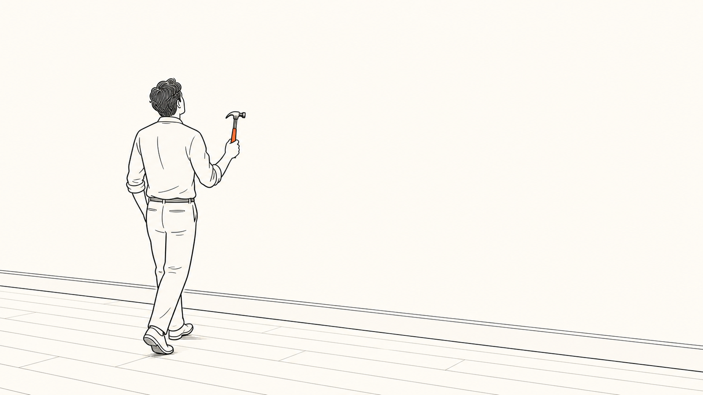
Claude giỏi đọc-viết-suy nghĩ — và giờ tự viết được phần mềm.
Đọc · viết · suy nghĩ
Đọc tài liệu, soạn, phân loại, tổng hợp. Việc của một trợ lý giỏi — nếu có thời gian.
Tự viết phần mềm
Web app nội bộ, tool tự động, tích hợp API, dashboard. Trước phải chờ IT 3 tháng — giờ vài giờ.
Ai cũng cầm được — không cần kỹ sư, không cần hạ tầng. Phần khó: (a) biết đập vào đâu, (b) đừng đập từng cái một.
Performance của CxO ≠ làm nhiều hơn. Là đòn bẩy.
Tối ưu một CxO khác tối ưu một nhân viên. Vì CxO có 3 thứ team không có — và đó chính là chỗ AI tạo đòn bẩy thật, nếu mình dùng đúng.
20 phút tới — không phải dạy AI cho cả công ty. Là cho mình một khung để tối ưu cái đòn bẩy đó. 4 slide tiếp theo: khung này nhìn từ vai trò của bạn (CEO · CTO · COO · CFO).
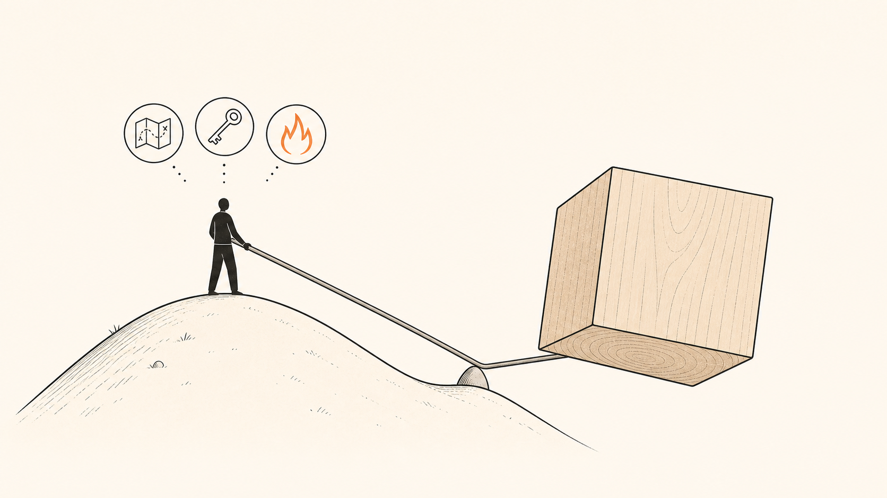
Cắt việc đúng — không phải làm việc nhiều.
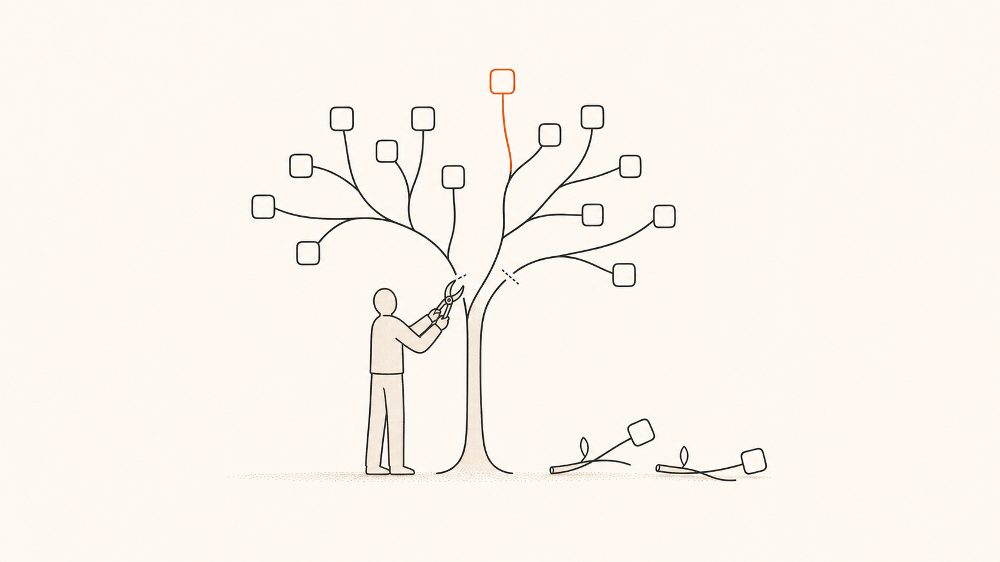
Build hay Buy — và "platform có mở cửa cho agent không?"
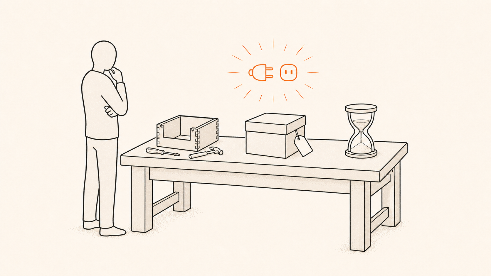
Sửa quy trình trước. Rồi AI chạy theo.
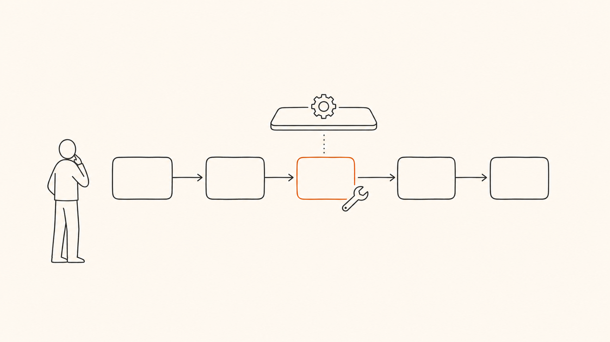
Mỗi pitch AI phải qua 5-câu gate trước khi qua bàn CFO.
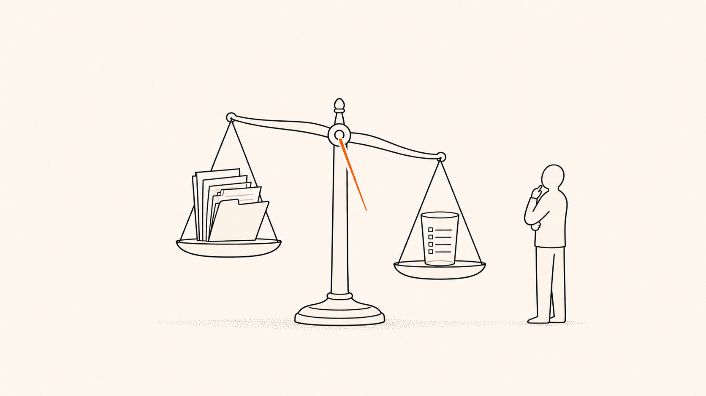
Cases rất nhiều. Khung là đòn bẩy. AI là cái map khung vào cases.
Cases là input đầu vào, không phải vấn đề. Có khung → AI làm việc map từng case vào đúng ô → giải pháp rơi ra. Tools 20 phút tới (gate · ma trận · 5 bề mặt · 4 thứ) đều là bóc từng phần của khung.
Năm thứ trông giống đinh — đập vào là hỏng.
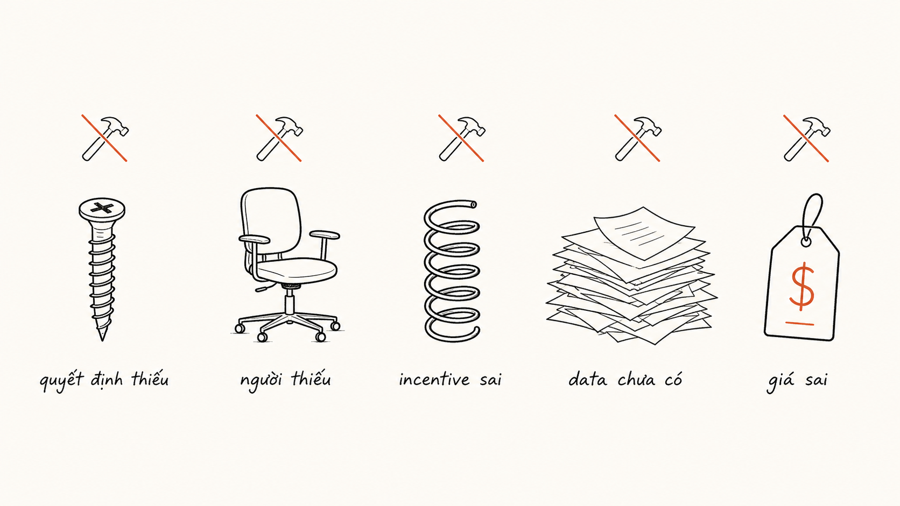
AI có phải đúng công cụ không? — 5 câu.
- Nút thắt thật là đọc / viết / phán đoán / tổng hợp — hay là quyết định còn thiếu, người còn thiếu, một project dọn dữ liệu, động lực sai?Nếu là mấy thứ sau — búa không đóng được. ❌
- Có lặp lại đủ nhiều để đáng build không?1 lần → làm tay. Dưới 2 lần/tuần → đừng build gì cả.
- Input có sẵn không — hay phải làm một project dọn dữ liệu trước?Nếu phải dọn — đó mới là việc thật, không phải AI.
- Ai dùng output, sai có ai quan tâm không?Khách hàng / pháp lý → bắt buộc có người kiểm → đổi cách làm.
- Claude làm cụ thể cái gì — và cái gì phải để con người làm?Nêu rõ phần phán đoán KHÔNG được tự động hóa.
Đây là cái menu — nhưng bạn vẫn đi từ vấn đề của mình.
Đây là phần "mẹo năng suất" anh/chị tới để nghe — có thật, dùng được. Nhưng đừng bắt đầu từ đây.
- Đọc P&L nhiều tháng → cờ chi phí bất thường, dòng cắt được
- Dựng model tài chính / tracker hàng tháng (file Excel thật)
- Stress test kế hoạch — kịch bản xấu nhất, mức tiền tối thiểu sống sót
- Transcript họp → action items + người phụ trách + deadline
- Digest vận hành hàng tuần — trạng thái dự án + blocker
- Tài liệu / hóa đơn chụp ảnh → trích dữ liệu có cấu trúc
- Soạn đề xuất hợp tác bám đúng pain của khách cụ thể
- Phân loại feedback / review / ticket → chủ đề + mức độ
- Phân tích lý do churn → cách sửa xếp theo tác động
- Tổng hợp lịch sử khách trước renewal call → brief 1 trang
- Phân tích sau chiến dịch — số vs target → 3 điều chỉnh
- Digest pipeline hàng tuần từ CRM → kênh leadership
- "Onboard" AI về công ty → mọi câu trả lời sau bám đúng bối cảnh
- Phân tích đối thủ — bán gì, cho ai, giá nào, điểm yếu ở đâu
- Stress test chiến lược — đóng vai cố vấn phản biện gắt
- Review hợp đồng — cờ điều khoản rủi ro, thiếu bảo vệ
- Quy định mới → "nó thay đổi gì cho mô hình của ta"
- Portfolio review — phân loại sản phẩm: grow / milk / fix / kill
- Web app nội bộ — form, admin dashboard, tool tra cứu
- Tool tự động hóa — nối hệ thống A → B, xử lý hàng loạt
- Tool năng suất nhỏ — máy tính báo giá, lịch, checklist app
- Tích hợp API — kéo data từ hệ thống này sang hệ thống kia
- Skill + MCP — quy trình lặp thành cái nút bấm cả team dùng
- Routine — chạy theo lịch / theo trigger, không cần ai có mặt
Đây không phải danh sách để chọn. Là để bạn nhận ra: cây búa giỏi đọc-viết-suy nghĩ — và giỏi tự viết phần mềm. Còn đập vào đâu — bắt đầu từ vấn đề lớn nhất của bạn, không từ cái menu này.
Một công việc — đáng làm không, và AI làm được không?
Trục ngang = qua được mấy câu gate? Trục dọc = sửa cái này thì tiền/giờ/rủi ro đổi gì? Một câu hỏi 2 trục — đủ để CXO chọn đúng việc.
Đặt được vào ô rồi — làm thế nào?
| Ô | Bề mặt | Việc đầu tiên (tuần này) | Ai làm |
|---|---|---|---|
| LÀM NGAY cao · dễ |
Chat / Cowork không build gì |
Chạy thử trên 1 ví dụ thật. Lưu prompt nếu hay dùng lại. | Bất kỳ ai trong team — không cần kỹ thuật. |
| DỰNG MÔI TRƯỜNG cao · khó |
Skill + MCP + Routine nếu chạy nền |
Dọn data / mở API hoặc CLI cho 1 platform / viết 1 skill. 2–4 tuần. | Founder ra brief · 1 dev build · cả team bấm nút. |
| ĐỂ SAU thấp · dễ |
Chat khi cần đừng build |
Làm tay. Đếm: lặp lại bao nhiêu lần/tuần? Đủ 2+ → mới nghĩ build. | Người làm việc đó — tự dùng Claude khi đụng. |
| BỎ QUA thấp · khó |
Không phải AI sửa thứ khác |
Quay lại 5 câu gate — nút thắt thật là gì? Quyết định / người / data / incentive? | Founder — đây là việc lãnh đạo, không phải tool. |
Đừng đập từng cái — dựng một môi trường.
Use case
"Claude, làm cái này cho tôi." Tuần sau quay lại với một việc khác. Đó là cái máy chạy bộ — không phải dùng AI, mà bị AI bào.
Môi trường
Dựng MỘT LẦN để Claude giúp được cả một LỚP vấn đề. Một vấn đề framing tử tế thường lộ ra cái pattern — đầu vào luôn giống nhau, hệ thống luôn ghi vào, chỗ người kiểm luôn cần.
Việc của founder không phải nghĩ ra use case hay. Là hiểu pattern (việc gì lặp lại) + capacity (mỗi bề mặt Claude làm được gì) — rồi thiết kế môi trường. Use case rơi ra miễn phí.
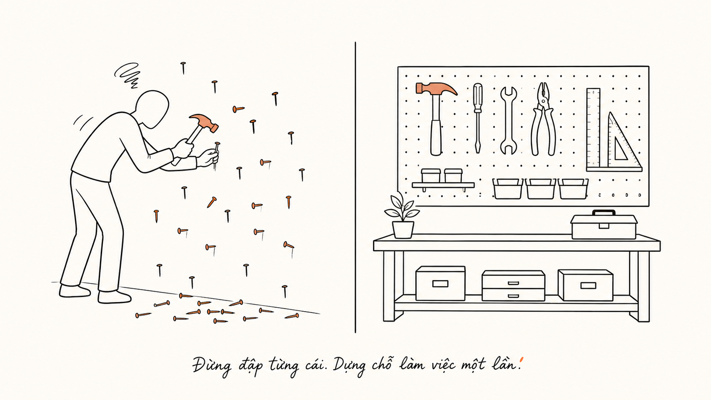
"Claude nào" úp việc đó.
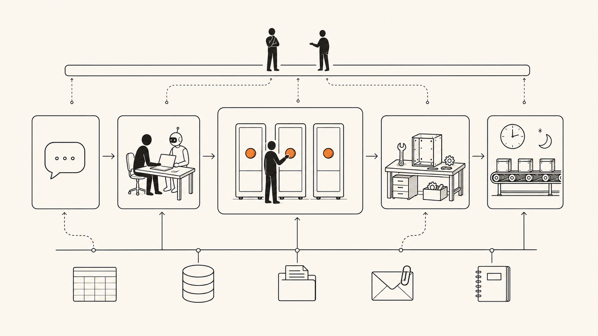
4 yếu tố môi trường.
Thiếu 1 trong 4 → vẫn đang đập từng cái đinh, chưa phải dựng môi trường.
AI là một lớp trên nền data — và là cây cầu khi platform chưa nối nhau.
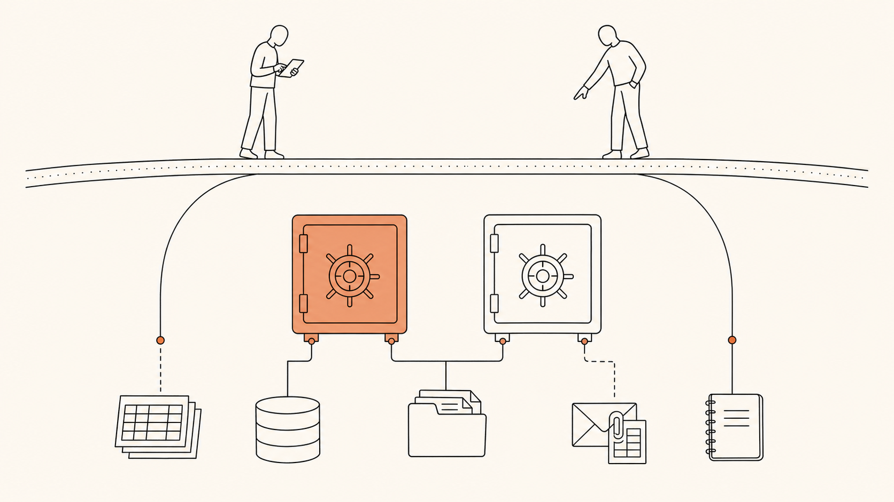
Nhiều nguồn data → vài nguồn primary (sources of truth) → AI là lớp giúp con người làm việc với data đó. Nguồn nào chưa có API chính thức (ví dụ CSV gửi qua email) → AI là cây cầu tạm, không phải lý do build app mới.
2 ví dụ — chạy qua khung trong 3 phút
- Đừng đi tìm vấn đề cho giải pháp — đi từ vấn đề. Ai cũng có búa; lợi thế là biết đập vào đâu, và đừng đập từng cái một.
- Vấn đề lớn nhất của bạn thường KHÔNG phải vấn đề AI — chạy 5 câu gate trước.
- Nếu đúng là vấn đề AI: dựng một môi trường — bề mặt + kết nối + skill + ranh giới. Một lần.
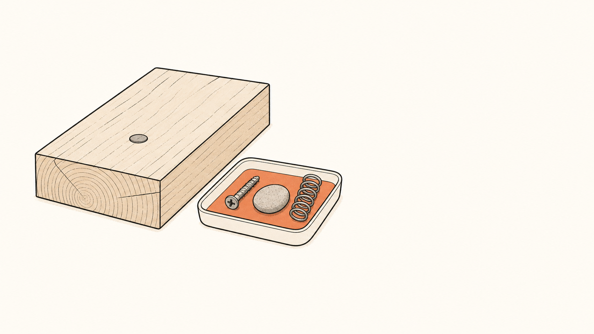
Cases thay đổi mỗi quý. Khung này thì không. AI map case vào khung — đó là long-term.
Chạy nó cho vấn đề lớn nhất của bạn.
Đi từ vấn đề.
Rồi dựng môi trường.
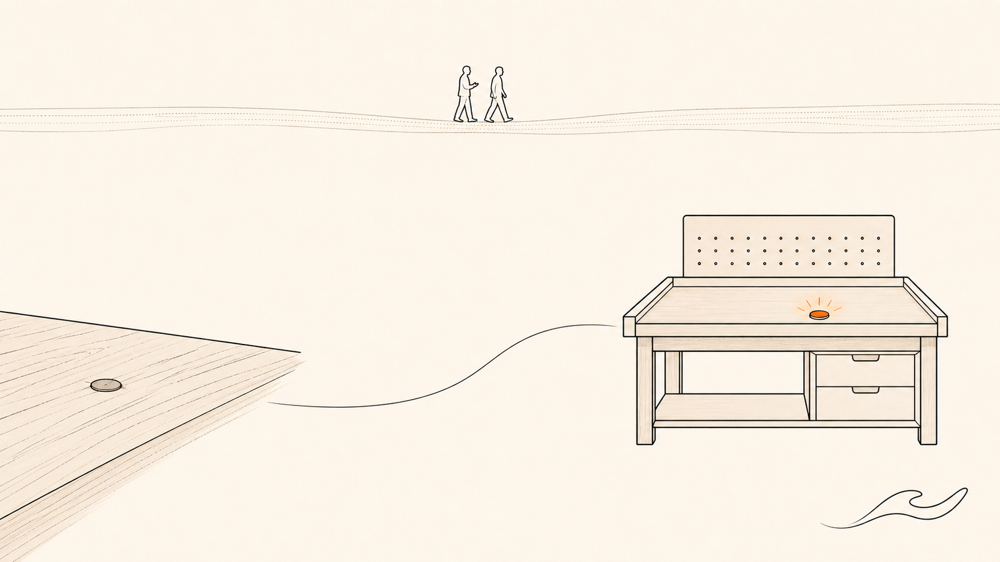